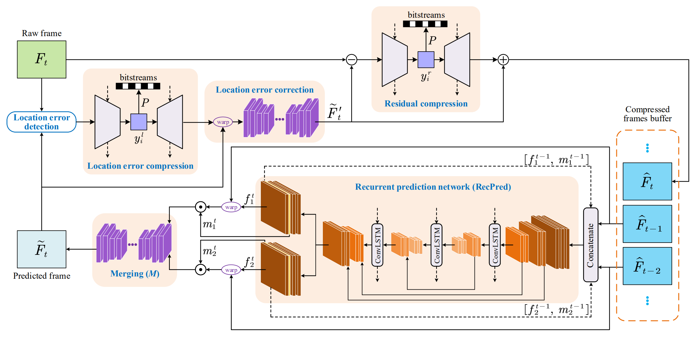
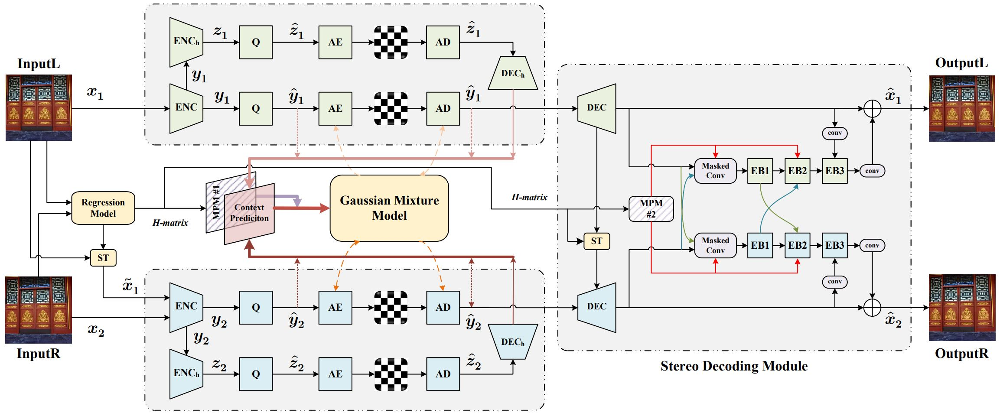
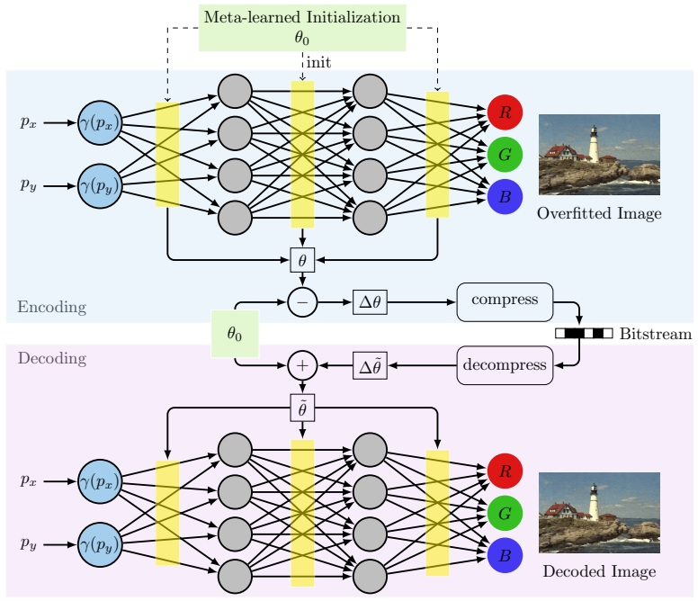
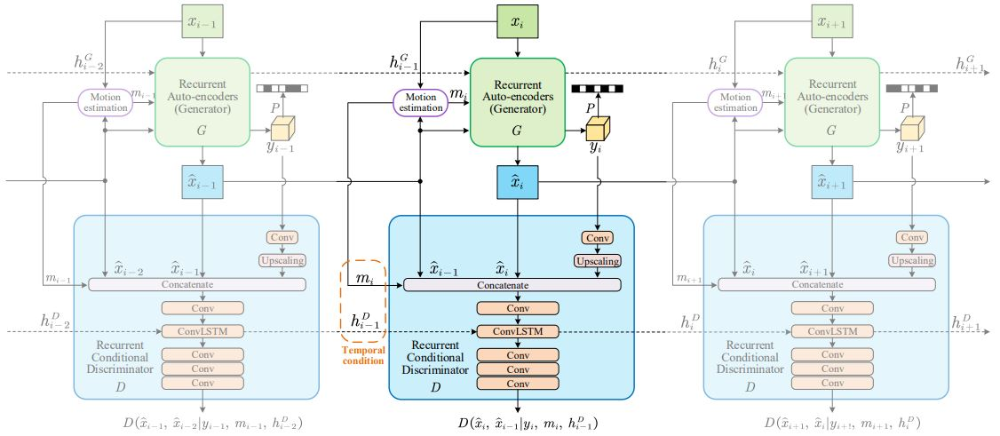
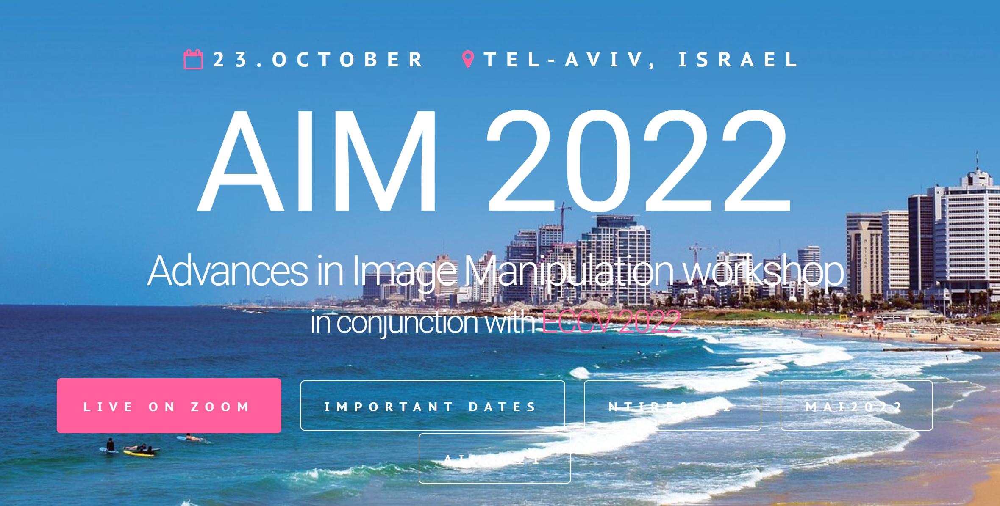
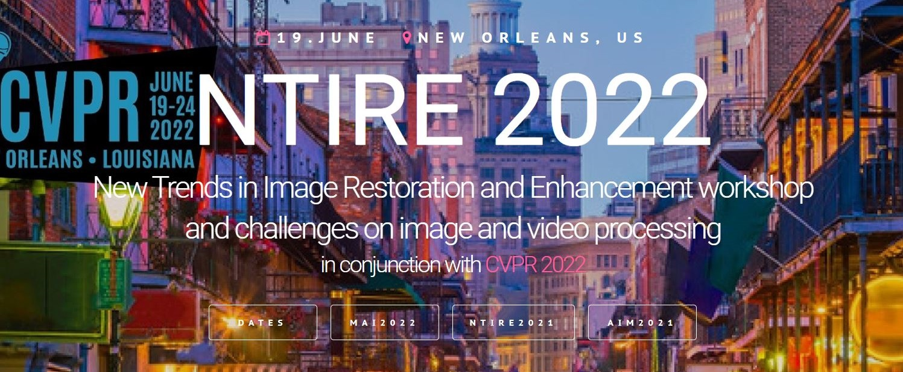
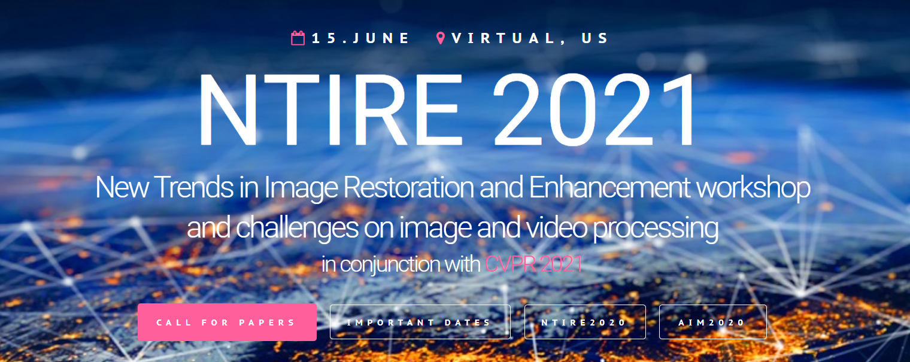

Dr. Ren Yang
 |
Ren Yang, Dr. sc. ETH Zürich |
Biography
I join SenseTime as a Senior Researcher on ISP & AI Codec. I obtained the Doctor of Sciences (Dr. sc. ETH Zürich) degree at the Computer Vision Lab, ETH Zurich, Switzerland, under the supervision of Prof. Dr. Luc Van Gool and Prof. Dr. Radu Timofte, and received the Chinese Government Award for Outstanding Self-financed Students Abroad. During my doctoral studies, I also worked as a Ph.D. researcher at Toyota Research on Automated Cars in Europe (TRACE). Before that, I was a Research Intern (with Award of Excellence) at the Intelligent Multimedia Group, Microsoft Research. I obtained the M.Sc. degree in 2019 at the MC^2 Lab, Beihang University, P.R. China, and the B.Sc. degree at the same university in 2016. My Master Thesis is awarded the Winner of Three Minute Thesis Competition at IEEE ICME 2019, and the Outstanding Master Thesis of Chinese Institute of Electronics.
{kind=link}
{kind=link}
{kind=link}
{kind=link}
I am a Session Chair at IJCAI 2022, a Senior Program Committee (SPC) Member at IJCAI 2021, a co-organizer of NTIRE 2023 (CVPR), AIM 2022 (ECCV), NTIRE 2022 (CVPR) and NITRE 2021 (CVPR) Workshops, a co-organizer/speaker of Tutorials on deep data compression at ACM MM 2021, CVPR 2021 and VCIP 2020.
{kind=link}
News
- I received the Chinese Government Award for Outstanding Self-financed Students Abroad (10,000 USD). [Certificate]
- One paper is accepted to IEEE Transactions on Circuits and Systems for Video Technology (T-CSVT). [Paper] [Code]
- I am a co-organizer of the NTIRE Workshop at CVPR 2023.
- One paper is accepted to IEEE Transactions on Circuits and Systems for Video Technology (T-CSVT). [Paper] [Code]
- I serve as a Session Chair at the Computer Vision Session of IJCAI 2022.
- One paper is accepted to ECCV 2022. [Paper] [Code]
- We organize the Challenge on Super-Resolution of Compressed Image and Video at the AIM workshop in ECCV 2022. [Report]
- One paper is accepted to IJCAI 2022 (Oral). [Paper] [Code]
- We organize the Video Super-Resolution and Enhancement Challenge at the NTIRE workshop in CVPR 2022. [Report]
- I supervise a Master's Thesis on learned image compression at ETH Zurich. [Paper] [Code]
- We organize the Tutorial on Deep Learning for Visual Data Compression at ACM MM 2021. [Tutorial page]
- I serve as a Guest Speaker for the Tutorial on Deep Learning for Visual Data Compression at CVPR 2021. [Slides]
- We organize the Video Enhancement Challenge at the NTIRE workshop in CVPR 2021. [Dataset] [Methods]
- I am selected in the Finalist of the Qualcomm Innovation Fellowship Europe 2021.
- One paper is accepted to CVPR 2021 (Oral). [Paper] [Code]
- Our US Patent for multi-frame video enhancement has been Granted. [Google Patent]
- I serve as a Senior Program Committee (SPC) member for IJCAI 2021. [Certificate]
- One paper is accepted to IEEE Journal of Selected Topics in Signal Processing (J-STSP). [Paper] [Code]
- We deliver a Tutorial on Learned Image and Video Compression at IEEE VCIP 2020. [Abstract] [Slide] [Video record]
- I supervise a Master's Semester Project on learned image compression at ETH Zurich. [Paper] [Code]
- One paper is accepted to CVPR 2020. [Paper] [Code]
- One paper is accepted to IEEE Transactions on Image Processing (T-IP). [Paper] [Code] [Dataset]
- My Master Thesis is awarded the 2019 Outstanding Master Thesis of Chinese Institute of Elecronics. [Certificate]
- One paper is accepted to ICCV 2019 (Oral). [Paper] [Code]
- One paper is accepted to IEEE T-PAMI. [Paper] [Code]
- I am the Winner of Three Minute Thesis Competition at IEEE ICME 2019. [Certificate]
Selected Publications
|  |
Advancing Learned Video Compression with In-loop Frame Prediction |
|  |
MASIC: Deep Mask Stereo Image Compression |
|  |
Implicit Neural Representations for Image Compression |
|  |
Perceptual Learned Video Compression with Recurrent Conditional GAN |
|  |
AIM 2022 Challenge on Super-Resolution of Compressed Image and Video |
|  |
NTIRE 2022 Challenge on Super-Resolution and Quality Enhancement of Compressed Video |
|  |
NTIRE 2021 Challenge on Quality Enhancement of Compressed Video |
 |
Deep Homography for Efficient Stereo Image Compression |
 |
Learning for Video Compression with Recurrent Auto-Encoder and Recurrent Probability Model |
 |
Learning to Improve Image Compression without Changing the Standard Decoder |
 |
Learning for Video Compression with Hierarchical Quality and Recurrent Enhancement |
 |
Understanding and Predicting the Memorability of Outdoor Natural Scenes |
 |
Wavelet Domain Style Transfer for an Effective Perception-distortion Tradeoff in Single Image Super-Resolution |
 |
Quality-Gated Convolutional LSTM for Enhancing Compressed Video |
 |
MFQE 2.0: A New Approach for Multi-frame Quality Enhancement on Compressed Video |
 |
A Deep Learning Approach for Multi-Frame In-Loop Filter of HEVC |
 |
Multi-Frame Quality Enhancement for Compressed Video |
 |
Reducing Complexity of HEVC: A Deep Learning Approach |
 |
Enhancing Quality for HEVC Compressed Videos |
 |
Saliency-Guided Complexity Control for HEVC Decoding |
Patents
- Multi-frame quality enhancement method and device for lossy compressed video
WO2019154152A1 [Google Patent]
US10965959B2, 2021 [Google Patent] [Certificate]
CN108307193B, 2018 [Google Patent] [Certificate]
Software copyright, 2020SR0472737, 2020 [Certificate]
- Deep learning method-based block segmentation coding complexity optimization method and device
WO2019179523A1 [Google Patent]
CN108495129B, 2019 [Google Patent] [Certificate]
- A CNN-based method for image and video enhancement
CN107481209B, 2020 [Google Patent] [Certificate]
- A saliency-guided method for complexity control of HEVC decoding
CN106210717B, 2017 [Google Patent] [Certificate]
Awards
- Chinese Government Award for Outstanding Self-financed Students Abroad (10,000 USD). [Certificate]
- Winner of Three Minute Thesis Competition, IEEE ICME 2019. [Certificate]
- 2019 Outstanding Master Thesis Award of Chinese Institute of Elecronics. [News] [Certificate]
- Award of Excellence at Microsoft Research. [Certificate]
- TOP 10 Graduate Students Award, Beihang University. [Certificate]
- National Scholarship, P.R. China. [Certificate]
{kind=link}
{kind=link}
Tutorials
- ACM MM 2021: Deep Learning for Visual Data Compression.
- CVPR 2021: Deep Learning for Visual Data Compression. [Tutorial homepage]
- IEEE VCIP 2020: Learned Image and Video Compression with Deep Neural Networks. [Abstract] [Slide] [Video record]
Workshops
- Co-organizer of the 8th New Trends in Image Restoration and Enhancement (NTIRE) workshop (CVPR 2023).
- Co-organizer of the Advances in Image Manipulation (AIM) workshop (ECCV 2022).
- Organizer of the AIM 2022 Challenge on Super-Resolution of Compressed Image and Video [Report]
- Co-organizer of the 7th New Trends in Image Restoration and Enhancement (NTIRE) workshop (CVPR 2022).
- Co-organizer of the 6th New Trends in Image Restoration and Enhancement (NTIRE) workshop (CVPR 2021).
- Organizer of the NTIRE 2021 Challenge on Quality Enhancement of Compressed Video [Dataset] [Methods]
Services
Session Chair:
- International Joint Conference on Artificial Intelligence (IJCAI 2022) [Program]
Senior Program Commitee (SPC) Member:
- International Joint Conference on Artificial Intelligence (IJCAI 2021) [Certificate]
Journal Reviewer:
- IEEE Transactions on Pattern Analysis and Machine Intelligence (T-PAMI)
- International Journal on Computer Vision (IJCV)
- IEEE Transactions on Image Processing (T-IP)
- IEEE Journal of Selected Topics in Signal Processing (J-STSP)
- IEEE Transactions on Multimedia (T-MM)
- IEEE Transactions on Circuits and Systems for Video Technology (T-CSVT)
- IEEE Transactions on Emerging Topics in Computational Intelligence (T-ETCI)
- IEEE Open Journal of Circuits and Systems (OJ-CAS)
- IEEE Signal Processing Letters (SPL)
- IEEE Access
- Elsevier's Signal Processing: Image Communication
- Elsevier's Neurocomputing
- Hindawi's Advances in Multimedia
Conference Reviewer/Program Commitee (PC) Member:
- Annual Conference on Neural Information Processing Systems (NeurIPS 2022)
- IEEE/CVF Conference on Computer Vision and Pattern Recognition (CVPR 2021/2022/2023)
- IEEE International Conference on Computer Vision (ICCV 2021/2023)
- European Conference on Computer Vision (ECCV 2020/2022)
- International Conference on Learning Representations (ICLR 2022/2023)
- International Conference on Machine Learning (ICML 2023)
- AAAI Conference on Artificial Intelligence (AAAI 2022/2023)
- International Joint Conference on Artificial Intelligence (IJCAI 2021/2022)
- Asian Conference on Computer Vision (ACCV 2020)
- IEEE Visual Communications and Image Processing (VCIP 2021/2022)
- IEEE/CIC International Conference on Communications in China (ICCC 2018)
Teaching and Supervision
- Supervisor: Master's Thesis on learned image compression, ETH Zurich (Spring 2021)
- Supervisor: Master's Semester Project on learned image compression, ETH Zurich (Spring 2020)
- Teaching Assistant: Digital Image Processing, Beihang University (Spring 2017)